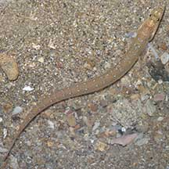
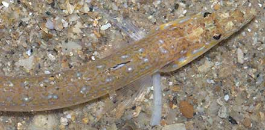
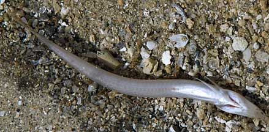
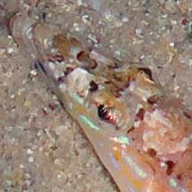
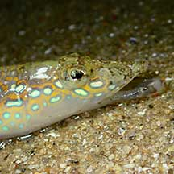
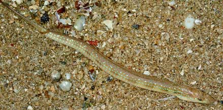
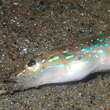
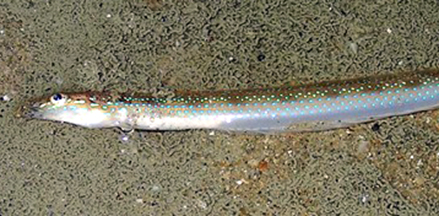

|
|
| fishes text index | photo index |
| Phylum Chordata > Subphylum Vertebrata > fishes |
| Sand-divers Family Trichonotidae updated Nov 2020 Where seen? These long, beautifully patterned fishes are sometimes seen in sandy areas near living reefs. It is said that they hover in small groups above the sand. When threatened, they dive into the sand. Hence their common name. What are sand-divers? Sand-divers belong to Family Trichonotidae. According to FishBase: the family has one genera (Trichonotus) with 6 species. Features: To 15-18cm, those seen much shorter, about 8-10cm. These fishes have a long and slender body, somewhat flattened sideways. The pointed snout had a lower jaw that is longer than the upper jaw. Some have fine gold 'eyelashes' over large eyes. The male fish has long filamentous extensions on his dorsal fin. |
 Sisters Island, Jul 04 |
 Sisters Island, Jul 04 |
|
 Underside of a dead fish. Cyrene Reef, May 11 |
 Lower jaw slightly longer, Fine gold 'eyelashes'. Cyrene Reef, May 11 |
|
| Sand-divers on Singapore shores |
On wildsingapore
flickr
|
| Other sightings on Singapore shores |
 East Coast Park Sailing Centre, May 21 |
 Photo shared by Toh Chay Hoon on facebook. |
 Photo shared by Toh Chay Hoon on facebook. |
 East Coast Park, Jul 15 |
Links
References
|